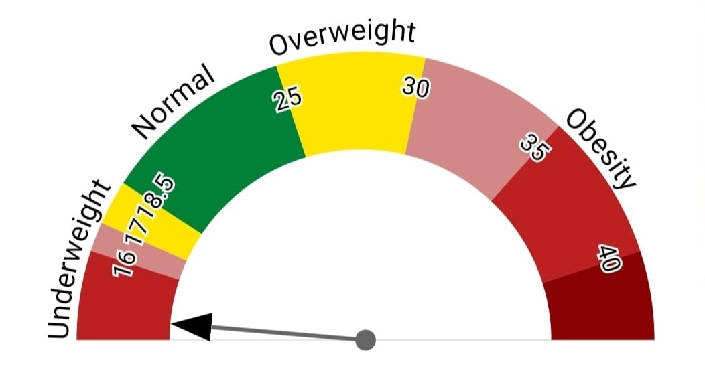

YOU ARE UNDERWEIGHT!
"This indicates a lean BMI, which means you have a low amount of body fat. If you are an athlete, this can be desirable. If you are not an athlete, a lean BMI can indicate that your weight may be too low, which may lower your immunity. If your BMI and body weight are low,
you should consider gaining weight through good diet and exercise habits, to increase your muscle mass."
